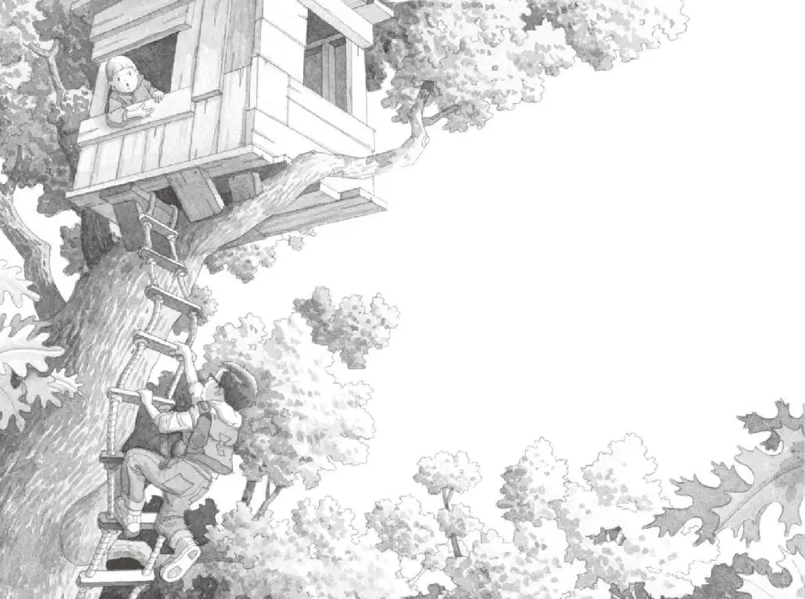

“我们再去看看吧，杰克。”安妮说。
杰克和安妮正从图书馆往家走，恰好路过蛙溪树林。
杰克叹了口气，说：“我们今天早晨不是看过了吗？而且，昨天和前天也看了。”
“那你不用去啦，”安妮说，“我自己去看好了。”
她拔腿就往树林里走。
“安妮，等等！”杰克喊道，“天都快黑了！我们得赶紧回家！”
可是安妮已经消失在树丛间了。
杰克瞪大眼睛朝树林里望。他已经渐渐失去了希望。也许再也见不到仙女摩根了。
几个星期以来，他们没有发现仙女摩根的任何踪迹，她的那个树屋也已经消失得无影无踪。
“杰克！”安妮在树林里喊道，“它回来啦！”
“唉，她又开始像平时一样演戏逗我了。”杰克想。可是他的心不由得突突跳了起来。
“快点儿来呀！”安妮喊道。
“希望她不是在开玩笑。”杰克想。
他迈步走进树林，寻找安妮。
夜幕很快就降临了。蟋蟀在大声地唱着歌。树林里阴影幢幢，很难看清周围的东西。
“安妮！”杰克喊道。
“在这儿呢！”安妮大声回答。
“哪儿？”杰克边走边问。
“就在这儿！”安妮回答。
安妮的声音从上面传来。
杰克抬起头。
“哦，天哪！”他激动得喘不过气来。
安妮正在树屋的窗口朝他招手。树屋在树林里最高的那棵大橡树上，一架绳梯从上面垂下来。
神奇树屋又回来了。
“快上来吧！”安妮喊道。
杰克跑向绳梯，然后抓着绳子往上爬。
他爬啊，爬啊，爬啊。

他一边爬，一边越过树顶朝远处眺望。在树梢的高处，天色还亮着呢。
最后，杰克双手用力一撑，爬进了树屋。
安妮正坐在暗处。树屋里到处都散落着书。
地板上，那个字母M在昏暗的光线里微微闪烁。M代表了仙女摩根。
可是仙女摩根本人却不见踪影。
“我真想知道仙女摩根去了哪里。”杰克说。
“也许她到图书馆去收集更多的书了。”安妮说。
“我们刚才就在图书馆，要是她在那儿的话，我们刚才就应该能遇到她。”杰克说，“而且，图书馆现在已经关门了。”
“吱吱！”
一只小老鼠从一摞书的后面跑了出来，冲向地板上那个闪闪发亮的字母M。
“哎呀！”安妮喊道。
小老鼠坐在字母M的中间，抬起头看着杰克和安妮。
“哇，好可爱啊。”安妮说。
杰克不得不承认，这只小老鼠确实非常可爱，它有着褐色和白色相间的皮毛和一双乌溜溜的大眼睛。
安妮慢慢地向它伸出一只手，小老鼠没有动。安妮又轻轻拍了拍它小小的脑袋。
“你好，花生米，”她说，“我可以叫你花生米吗？”
“哦，天哪，又来了……”杰克嘟囔道。
“你知道仙女摩根在哪儿吗？”安妮问小老鼠。
“吱吱。”
“你疯了吧，安妮。”杰克说，“就算这只小老鼠出现在神奇树屋里，也不代表它有魔法啊。它不过就是一只普普通通的小老鼠，不知道从哪儿钻进来的。”
杰克又瞧了瞧周围，看见地上有一张纸。
“那是什么？”他问道。
“会是什么呢？”安妮也很好奇地问道。
杰克走过去，把那张纸捡了起来。纸上写了一些字。
“哦，天哪！”杰克看完那段文字，轻声叹道。
“是什么？”安妮问。
“一张字条。”杰克说，“肯定是仙女摩根留下来的。我想，她应该是遇到大麻烦了。”